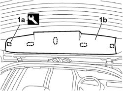
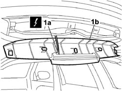

7015A58 INTERNAL TAILGATE MOULDING (ONE) - R+R
- Path
- Procedures > 70 FITTINGS > 7015 TAILGATE/FLAP > 7015A TAILGATE ASSEMBLY > 7015A58 INTERNAL TAILGATE MOULDING (ONE) - R+R
- Kind
- repair procedure (removal / refitting; the operation number is the code)
- Applies to
- all engines; all production periods
- Interactive page
- https://sloeber94.github.io/elrnDB-fCrm/en/#/194000947
Applies to: all engines; all production periods
 Removing
Removing
 Refitting
Refitting- Open the tailgate.
- Turn the ignition key to the OFF position.
- Disconnect the negative battery terminal.
Description | Connector | |
|---|---|---|
BATTERY |
1. Use a cutter to cut the anchorage points (1a) shown in the figure. Prise up moulding (1b) and turn down, taking care not to damage the wiring connected to the third brake light.
Tool | Description | Function | Validity |
|---|---|---|---|
1878077000 | Knife | Retainer removal |

Applies to: all engines; all production periods
1. Disconnect the electrical connection (1a) and remove the moulding (1b) from the tailgate.
Description | Connector | |
|---|---|---|
1a | ADDITIONAL REAR LIGHT (THIRD BRAKE LIGHT) |

Applies to: all engines; all production periods
Refitting
Removing- Connect the electrical connection to the third brake light.
Description | Connector | |
|---|---|---|
ADDITIONAL REAR LIGHT (THIRD BRAKE LIGHT) |
- Place the moulding correctly in position in its housing and press on the mounting points to fit the clips.
- Reconnect the negative battery terminal.
Description | Connector | |
|---|---|---|
BATTERY |
Topics linked from this page (2)
Topics that link to this page (8)
- 5050C10 REAR WINDOW WASHER JET - R+R CLEAN AND/OR POSITION
- 5505C41 PASSENGER COMPARTMENT WIRING - R.R
- 5550D16 THIRD BRAKE LIGHT - R+R
- 5550D17 THIRD BRAKE LIGHT BULB(S) - R.R
- 7015A07 <x>TAILGATE SIDE TRIM - R&R</x>
- 7035B14 REAR WINDOW GLASS - R.R INCLUDES CLEANING HOUSING
- 7205E56 STRIPPING TAILGATE
- 7210E56 R.R. TAILGATE